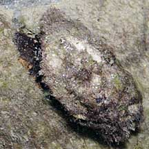

|
|
| shelled snails text index | photo index |
| Phylum Mollusca > Class Gastropoda |
| Dolphin
snail Angaria delphinus Family Angariidae updated Sep 2020 Where seen? This large snail with an encrusted shell but pearly inner mouth is sometimes seen on some of our reefy shores. It was previously associated with the Family Trochidae. Features: 4-6cm. Shell thick heavy, flattened coil with stubby spikes on the outer edge. Upperside usually hidden under a thick layer of encrusting lifeforms. We should not clean off the camouflaging cover on a living snail as this might put it in danger. Shell operning pearly and somewhat angular in outline. Unlike other commonly seen turban snails, the ooperculum is thin, brown and made of a horn-like material. Body with dark blotches, a pair of long tentacles. |
 Upper side usuallyunder a thick layer of encrusting organisms. Tanah Merah, Oct 09 |
 Tanah Merah, Jun 10 |
 Tanah Merah, Oct 09 |
| Dolphin snails on Singapore shores |
On wildsingapore
flickr
|
| Other sightings on Singapore shores |
|
Links
References
|